SOOTBORN
Progress Report
Between the last report and this one SOOTBORN went from v0.48 to v0.65 in under seven hours. The story now runs on one clock and plays in order. Cinderwell has a street you can go back to and four places you walk in depth. The figures above the rock have armour, hands and a real blade, and the Proctors are drawn. The writing is still ahead of the pictures everywhere, and nobody has yet played the whole game by hand.
Since the last report
Added (v0.49 to v0.65)
- Row K: a street below you can go back to, with neighbours, finds, a Scuffle and a morning memory. The Codex.
- Places walked in 2.5D: the fire on night 28 inside the story, and three memories you can step into: the square, Row K at morning, the fever ward.
- The Proctors: drawn as detailed flat figures on the valley dais and in the Pairing gallery.
- Arena figures: plate, gauntlets and fingers on the arms; tassets, knees and greaves; a torso with a baldric and scabbard; a blade with a fuller and an edge.
- Arena boots: the camera follows you up and pushes in on a dive; haul a man up with the hook and cut him down.
- Third-person levels: kit for guards, bosses and Tavi; guards with three blows and a block; arms that swing on a run; the fleet in two rings overhead.
- A whole-story bot that plays from New Game to THE END.
Changed
- One clock. Every card says how long before or after the furnace, or names a day of the Assay. The four days below have names: Ashgate, First Fire, The Ledger, The Way Out.
- The reorder. Training and the Assay now run forward across the four nights. Nothing was cut.
- Fights are harder and longer, and mashing can no longer keep a man on the floor.
- The second wind cuts to a memory that fits the year you are in.
- The tap prompt is gone from the levels; a controller gets its own button legend.
From your notes
- The level HUD in the middle of the screen: fixed on the third try, from your screenshot. The level was leaving room for the phone's notch inside its own frame.
- Story beats missing from the Dev menu after the Training room: fixed.
- The docks' first sun could be walked past, leaving the level empty: fixed.
Against what the last report found lacking
- Hand play: you played from the beginning to the Stair. Your notes are not yet in. Still no full run.
- One control language: both sticks and lock-on now reach the levels, and a controller shows its own legend. It is still three fighting systems, and the one controls card is still on the list.
- Phone performance: still not measured.
Where it stands
- One file, about 2.2 MB, playable offline with touch, keyboard or controller. About 7,400 lines of game code, plus the third-person levels, which carry their own 3D engine inside the file.
- The whole story plays from the first second to THE END: a prologue, four named days below (Part One), five chapters above (Part Two), two endings.
- Free play: two walk-about days (Ashgate, First Fire), Row K, two stealth sequences.
- 18 fights on the main path in two styles: 2D below, 3D arena above. The Scuffle on Row K, the Ember Ring and the fighting inside the levels are extra.
- 7 2D levels: the Camp, the Island, the Lamp, the Dais, the Last Night, the Count hall, the Sun.
- 3 third-person levels (Riser Nine, the High Docks, the Stair) and one drawn sequence (the Table).
- A Codex, a Memories shelf, three save slots, a training room, and a Dev menu that jumps to any scene.
Frames from the v0.65 build
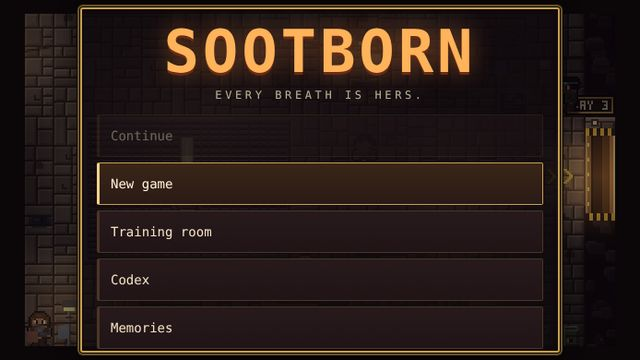
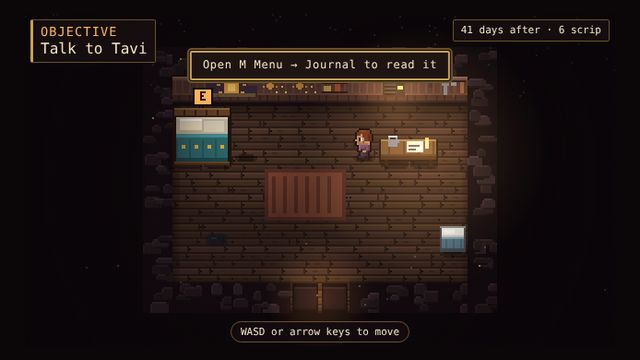
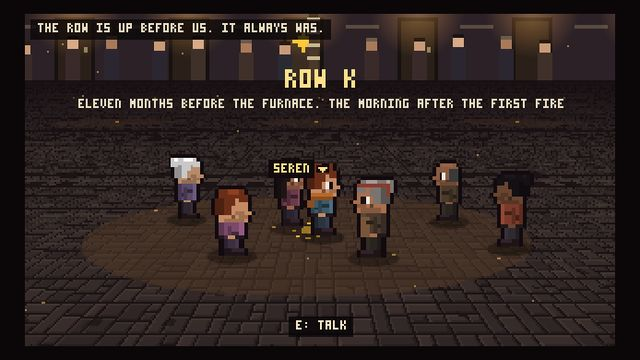
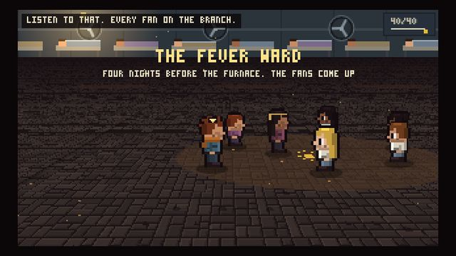
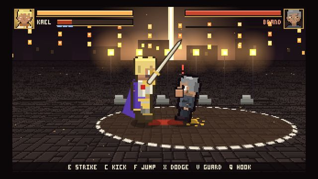
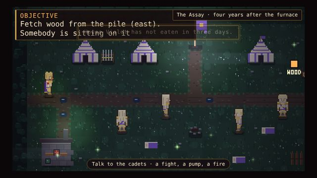
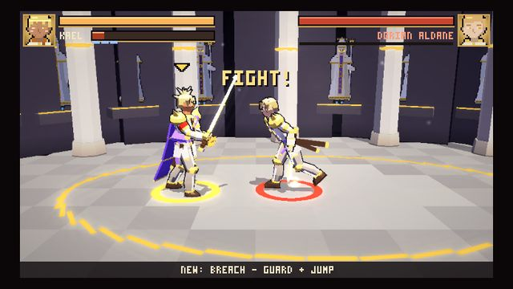
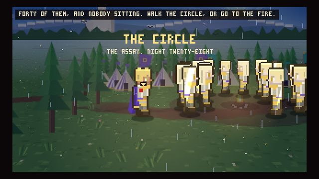
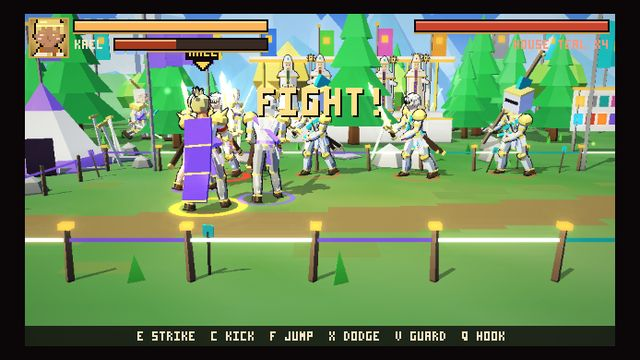
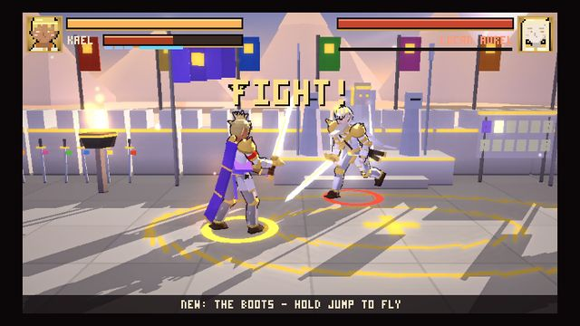
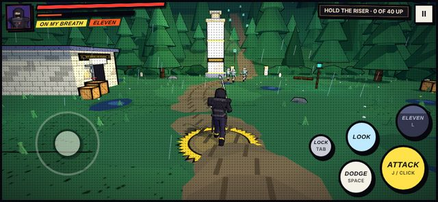
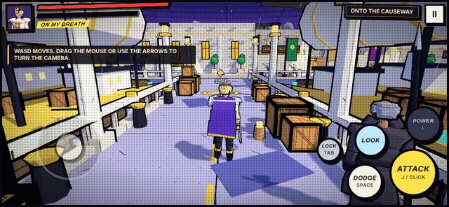
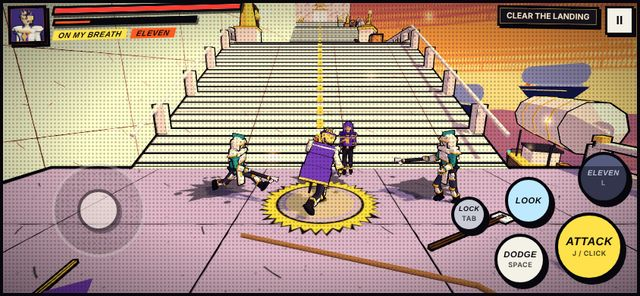
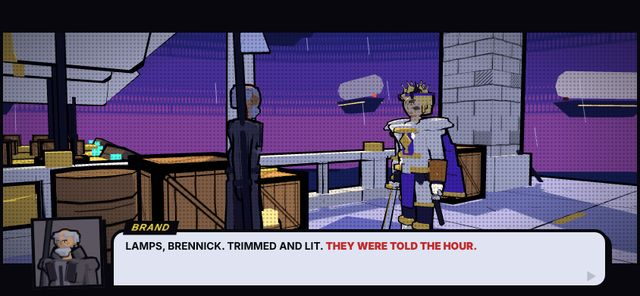
Fourteen frames from the build, shrunk. I looked at each one. I didn't see any of it moving on a phone.
One clock
The rule
- The furnace is zero. A card says how long before or after it, or names a day of the Assay.
- Never "from now", "later", "earlier" or "ago" on a card. Those change meaning as the story moves.
- People may speak from their own present. Cards may not.
The four days below
- Ashgate: 41 days after.
- First Fire: 42 days after.
- The Ledger: 43 days after.
- The Way Out: 160 days after.
- The old "Day 1, Day 2" labels are gone from the HUD, the pause screen, saves and Continue.
The order of play
The game was built as we went, so the Assay used to arrive out of order: day 19, then days 28 to 31, then the last day, then back to day 3. You approved the reorder. Now, after the cold open, it only moves forward. The chart shows the Assay scenes in the order the player meets them, against the day of the Assay each one happens on.
Scroll sideways on a phone. Numbers are the order now and match the list. The Valley is first on purpose: it is the cold open, what he becomes.
The whole game, from the first second
Kept, in case we go back
The game as it was before the reorder is a separate playable copy in your artifacts, SOOTBORN, v0.64, before the reorder, and the branch sootborn-v0.64-before-reorder in the repo.
People
Who they are, what the game has told, what it hasn't, and what each is for. A person earns a place in a game by being played, fought, met in a level, or by standing somewhere you can go back to.
Tap a group to open it.
Lore
Told well
- The furnace and the count to eleven.
- Air as money.
- The shift song.
- How soot speak and how the Accredited speak.
- The Gilding.
- The Assay and who pays for it.
- The Count as a book.
- The seat knives.
Named and never shown
- The Deep Array: what it is, and why it is failing.
- Tiers 4, 5, 7, 8 and 9. We only ever stand on 6.
- The other ten Houses.
- The surface beyond the valley.
- How the Accredited got above in the first place.
Where it doesn't match its own writing
Kit, weapons and clothes the script describes that the screen doesn't show.
Eight deliberate animations that would tell the story
- Hand flat on the pipe. Seren taught it, Kael does it, Kestrel does it without knowing why. One idle, three people, and the player sees who belongs to whom.
- Counting the knives back. The end of every day below.
- Heads. Soot turn to look at whoever speaks. The Accredited keep their eyes front. A crowd rule, no new art.
- The kneel at the bell. Porters on the Spire, the tier at Lift Zero: the same kneel, and the day nobody does it.
- Kael's hand to the washer before ELEVEN. It is in the levels; not in the arena or 2D.
- A humming sway in a row of people at a commitment.
- Brand grounding the halberd; Hollis doing the same on the Stair.
- Tavi on Seren's left, then on Kael's left. Where he stands is the whole of that relationship.
Cutscenes, graded
Writing and art, scene by scene. The gap between the two dots is the finding: the words are ahead of the pictures almost everywhere.
Each track runs from C on the left to A on the right.
Overall: writing A−, art B−
Spend on pictures and movement, not on more words. The audit, the furnace, the count and the tin are the best thing in the game and should be left alone.
Scorecard
What it would cost
Cost here means tokens: how much work it takes me to build and check.
Cheapest things that help most
- The white cloak from day 31.
- The knife board, and counting the knives back.
- The head rule for crowds.
- Hand on the pipe.
- One controls card.
- More 2.5D memories.
Most expensive
- Rebuilding the High Docks.
- Any new third-person level.
- Converting the animation library the first time. After that each new move is cheap.
- The clerk's outfit across all of Part Two.
Where I'd spend next
Open at this point
Waiting on you
- A new name for "the Assay", one that sticks.
- Names to confirm: Kestrel Dray, Severin Cade.
- Celestine at the Pinning: written as "she knew him". To be confirmed.
- The boots: he takes them on day 31 and can't fly until the last day. Either he flies from the Valley on, or a line says they have no charge.
- The budget split above: right, or move it.
- The animation library (Quaternius, free): it needs attaching before the animation work can start. I couldn't download it from here.
- Your notes from playing to the Stair.
Known bugs (added after the snapshot, from your play)
- The fire pit: the Circle's 2.5D scene ends and the fight happens elsewhere. It should stay until the fight ends.
- Too floaty: a man can be kept in the air without the boots.
- Death animations: people spin when they die.
- The hook shot is missing as a real move in the 3D arena fights.
Not checked
- Nothing here was played by a person, and nothing was heard.
- The HUD fix, the Proctors and the 2.5D places haven't been seen on a real iPhone.
- Whether any spoken line still points at the old dream order.
- Whether the longer time cards fit a small screen.
- Frame rate on a phone.
Development timeline
Seventeen versions between 4:20 pm and 9:15 pm on 19 November, dated from the repo.